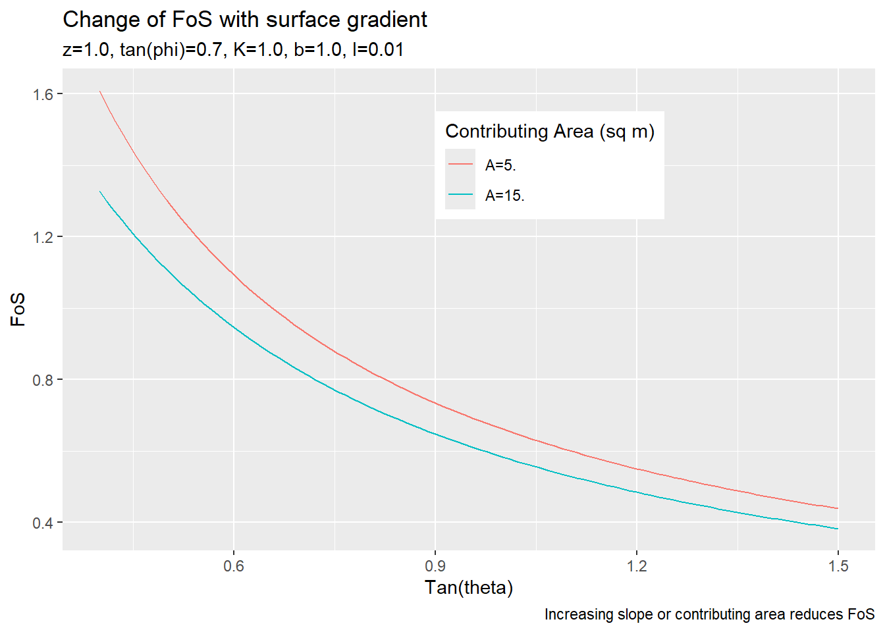

Infinite slope approximation, following (Skempton and deLory 1957). Set what we cannot know constant.
See this article in the National Highschool Journal of Science for a nice description of the infinite slope model.
We define the Factor of Safety (FoS) as the ratio of forces acting to hold soil in place to those acting to move soil downslope. FoS values greater than one indicate stability, less than one indicate failure. For a cohesionless, constant-thickness, isotropic, uniform soil layer on an infinite slope with steady-state surface-parallel saturated subsurface flow, forces acting to hold soil in place are given by the effective normal stress \(\sigma_n'\) at the base of the soil column (i.e., the soil-bedrock interface) multiplied by \(\tan\phi\), where \(\phi\) is the friction angle of the soil. The effective stress is given by the proportion of the weight of the soil column directed normal to the base of the soil layer minus the pore pressure at the base. For a soil layer of depth \(z,\) the weight of a unit length and width soil column is \(\gamma_s(z\cos\theta),\) where \(\gamma_s\) is the unit weight of soil (assumed spatially uniform) and \(\theta\) is the slope of the base of the soil layer (measured from horizontal), which is assumed parallel to the ground surface (the soil layer has uniform thickness). The portion of that weight directed normal to the base of the soil layer is \[\sigma_n = \gamma_s(z\cos\theta)\cos\theta.\]
For a saturated zone of vertical depth \(h\) within the soil layer, with seepage directed parallel to the surface of the ground surface, the pore pressure \(u\) at the base of the soil layer is \[u = \gamma_w(h\cos\theta)\cos\theta.\]
The effective stress at the base of the soil layer is \(\sigma_n' = \sigma_n - u,\) so the force acting to hold soil in place is: \[Force\;holding\;soil\;in\;place = (\sigma_n - u)\tan\phi = \gamma_s z \cos\theta^2 - \gamma_w h \cos\theta^2.\]
We can determine the depth of saturation \(h\) based on the discharge through the soil column. That discharge is equal to the surface area of the flow tube exiting the soil column, measured normal to the direction of water flow, times the Darcy velocity of flow through that surface. The flow tube defined by flow exiting the column has width \(b\) as it flows out of the column, where \(b\) is the length of the contour line (intersection of the equipotential head surface with the ground surface) crossed by flow exiting the cell, and height \(h\cos\theta\) measured normal to the direction of water flow. The Darcy velocity of flow through the flow tube is given by \(K\sin\theta,\) where \(K\) is saturated hydraulic conductivity of the soil, assumed spatially uniform. So discharge \(q\) out of the soil column is \(q = b(h\cos\theta)K\sin\theta\). For steady-state rainfall of intensity \(I,\) in depth per unit time, discharge out of the soil column is \(IA,\) where \(A\) is the contributing area (measured horizontally) for subsurface flow from infiltrating rainfall to the soil column. From this, we can define the vertical depth of saturation as \[h = \frac{IA}{bK\sin\theta\cos\theta}.
\]
The force tending to move soil downslope is given by the portion of the soil-column weight directed parallel to the base of the soil layer \(\gamma_s (z \cos\theta) \sin\theta\). So the factor of safety (FoS) for the soil layer is defined as
If we hold soil properties \(\gamma_s, \gamma_w, z, \phi\), and \(K\) constant, and assume steady state rainfall intensity \(I\), then FoS is a function solely of topographic attributes \(b\) and \(\theta\) and of the contributing area \(A\). We measure \(b\) and \(\theta\) from the DEM. Contributing area is estimated as a function of storm duration, assuming a spatially constant saturated hydraulic conductivity.
The use of a steady-state condition and infinite slope to derive these equations is not realistic. Clearly, slopes are not planar and infinite, soil is not uniform, and rainfall is not steady state. More realistic models can be derived (Iverson 2000), though with more parameters the values of which must be inferred. However, the infinite slope model has been employed successfully as an indicator of potential instability Dietrich, Bellugi, and Asua (2001) and, as used here, it provides a single-valued measure of potential topographic influences on slope stability via values of \(b, \theta\,\) and \(A\). This is confounded by correlations of soil properties with topography. We may be able to counter this to some extent by including mapped soil types in the model. We may also experiment with topographically based models of soil depth.
Behavior of this equation over a range of slope gradients for different values of soil properties, contributing areas, and rainfall intensities.
library(ggplot2)library(data.table)gamma_s <-1.8# unit weight of soil normalized by unit weight of waterz <-1.0# soil layer depth measured verticallytanPhi <-0.7K <-1.0b <-1.0tantheta <-seq(from=0.4,to=1.5,length.out=100)theta <-atan(tantheta)costheta <-cos(theta)sintheta <-sin(theta)I <-0.01A <-5.u <- I*A/(K*b*sintheta*costheta)FoS1 <- (gamma_s*z - u)*tanPhi/(gamma_s*z*tantheta)I <-0.01A <-15.u <- I*A/(K*b*sintheta*costheta)FoS2 <- (gamma_s*z - u)*tanPhi/(gamma_s*z*tantheta)FoSdata <-data.table(tantheta,FoS1,FoS2)long <-melt(FoSdata, id='tantheta')thisplot <-ggplot(long, aes(x=tantheta, y=value)) +geom_line(aes(colour=variable)) +labs(x ="Tan(theta)",y ="FoS",colour ="Contributing Area (sq m)",title ="Change of FoS with surface gradient",subtitle ="z=1.0, tan(phi)=0.7, K=1.0, b=1.0, I=0.01",caption ="Increasing slope or contributing area reduces FoS" ) +theme(legend.position ="inside", legend.position.inside =c(0.6, 0.8)) +scale_color_discrete(labels =c("A=5.", "A=15."))plot(thisplot)

The plan: Run partialAccum for a range of storm durations, set hopefully reasonable values for the variables to be held constant, and code up an FoS routine.
library(terra)
terra 1.8.5
Attaching package: 'terra'
The following object is masked from 'package:data.table':
shift
# Get the FoS raster created with program PartialAccum for a 5-hour-duration storm.FoS_pca5 <- terra::rast("c:/work/data/wrangell/fos_pca5.flt")f <-as.data.table(FoS_pca5) # Get the FoS values at the inventoried initiation pointspnts <- terra::vect("c:/work/data/wrangell/LS_pnts.shp")ls <- terra::extract(FoS_pca5,pnts)
Warning: [extract] transforming vector data to the CRS of the raster
# Filter the raster FoS values to include only those less than the maximum # point value.maxls <-max(ls$fos_pca5)fsub <-subset(f, fos_pca5 <= maxls)f1 <-as.data.table(fsub)
Dietrich, W. E., Dino Bellugi, and R. R. de Asua. 2001. “Validation of the Shallow Landslide Model, SHALSTAB, for Forest Management.” In, edited by M. S. Wigmosta and S. J. Burges, 195–227. Washington, D.C.: American Geophysical Union.
Iverson, Richard M. 2000. “Landslide Triggering by Rain Infiltration.”Water Resources Research 36 (7): 1897–1910. https://doi.org/10.1029/2000wr900090.
Montgomery, David R., and William E. Dietrich. 1994. “A Physically Based Model for the Topographic Control on Shallow Landsliding.”Water Resources Research 30 (4): 1153–71. https://doi.org/10.1029/93wr02979.
Skempton, A. W., and F. A. deLory. 1957. “Stability of Natural Slopes in London Clay.”